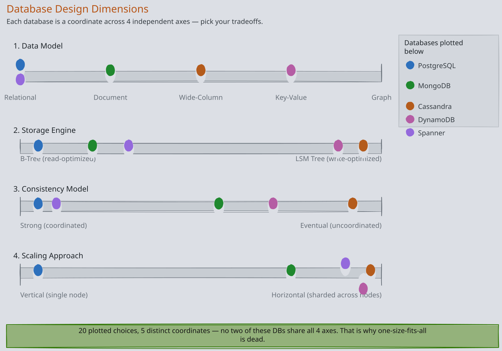
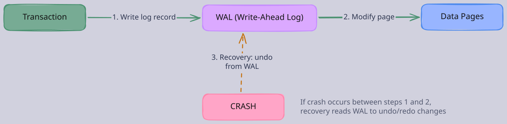
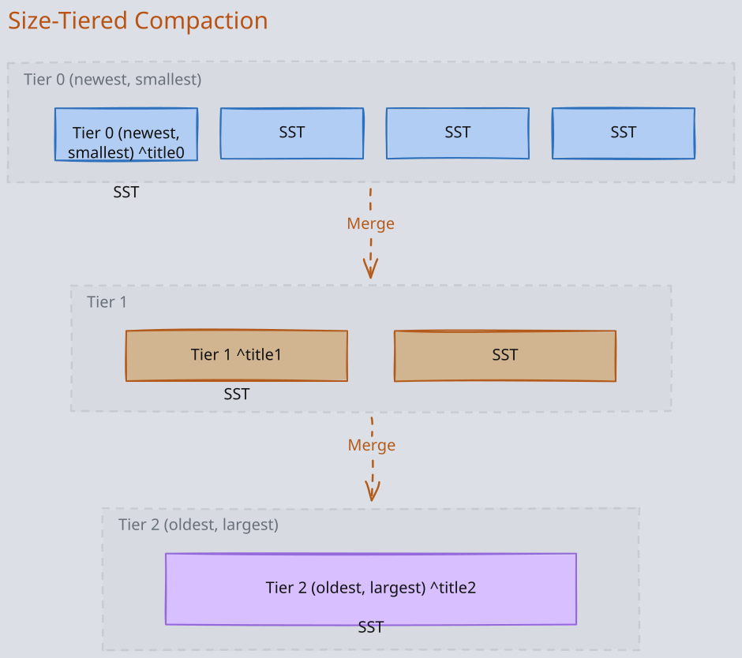
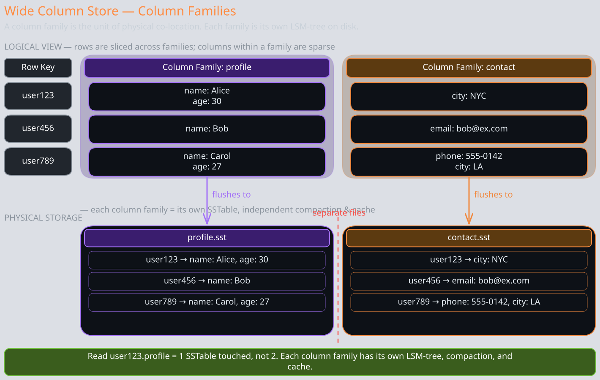
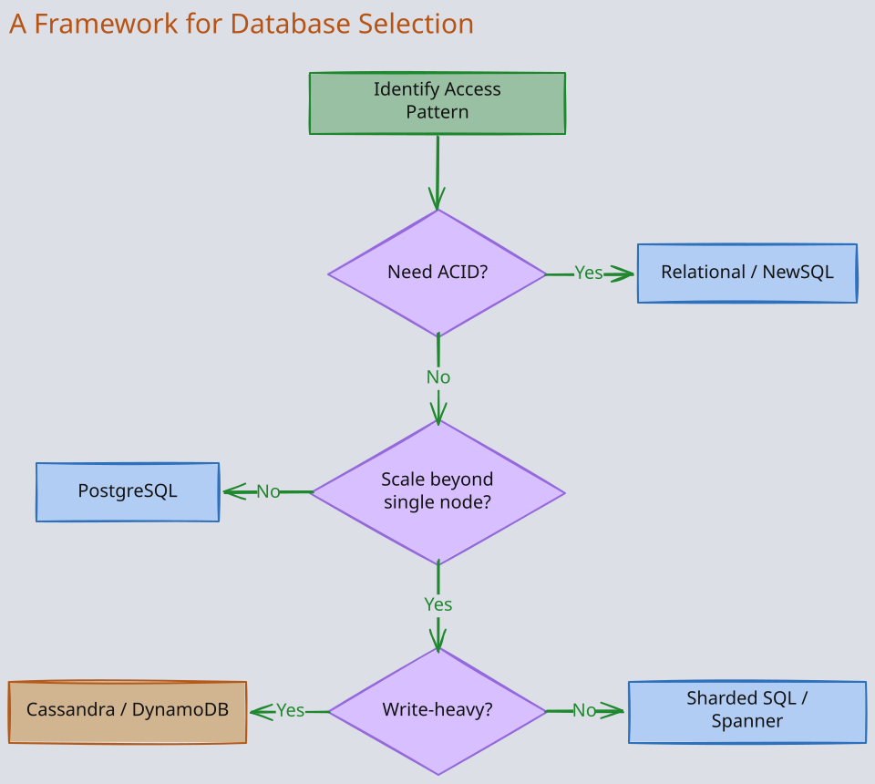

The Story
Michael Stonebraker — Turing Award winner, creator of Postgres and Ingres — has been arguing since the 1980s that one-size-fits-all databases are a lie. In 2005, he co-authored “One Size Fits All: An Idea Whose Time Has Come and Gone,” predicting the explosion of specialized databases. The industry ignored him and kept trying to make Oracle do everything. A decade later, the NoSQL movement proved him right. Today we have purpose-built databases for OLTP, OLAP, time-series, graph, search, and key-value workloads. Stonebraker’s career is a 40-year “I told you so” backed by Turing-level credentials.
Every database makes a set of fundamental bets about how data will be stored, accessed, and distributed. Understanding these bets — and the tradeoffs they create — is far more valuable than memorizing feature lists. This note covers both the foundational mechanisms that appear across storage engines and replication models, and the reasoning framework for choosing between databases. Each section builds intuition for why the mechanism exists, not just what it does.
Related Topics: Ch03-Storage-Retrieval, 04-BTree-SSTable-LSM, 08-ARIES-Explained, 05-Isolation-Levels, 06-MVCC, Ch05-Replication, 03-Consistency-Models, 02-CAP-and-PACELC, Ch06-Partitioning, 04-Cassandra, 03-DynamoDB, 01-01-Redis, 05-MongoDB, 07-Spanner
1. What Makes Databases Different
When you strip away marketing language, databases differ along four independent dimensions. Every design choice a database makes is a position on one of these axes.

1. Data Model
How the database organizes information, and what kinds of queries are natural versus expensive. Your data model choice determines which queries are O(1) and which are O(n). A social graph in a relational database requires recursive JOINs; in a graph database, it is a pointer chase. Conversely, running an analytical aggregation across a graph database is painful because the data is scattered across adjacency lists rather than organized in contiguous storage.
| Data Model | Core Abstraction | Natural Queries | Expensive Queries |
|---|---|---|---|
| Relational | Tables with foreign keys | JOINs, aggregations, ad-hoc queries | Deeply nested or hierarchical data |
| Document | Self-contained JSON documents | Single-entity reads, hierarchical data | Cross-document JOINs |
| Wide-Column | Rows with dynamic column families | Partition-key lookups, range scans within a partition | Arbitrary secondary queries, cross-partition scans |
| Key-Value | Opaque blobs by key | Single-key lookups | Everything else — the database has no understanding of the value |
| Graph | Nodes and edges | Relationship traversals, path queries | Full-table scans, aggregations |
2. Storage Engine
How the database physically writes and reads data on disk. This is the dimension most engineers overlook, but it determines read/write performance at a fundamental level. See 04-BTree-SSTable-LSM for the full treatment.
- B-Trees optimize for reads. They maintain a sorted, balanced tree structure that supports efficient point lookups and range scans. The cost is that every write must find the correct leaf page and update it in place — random I/O. Databases like PostgreSQL, MySQL, and MongoDB use B-Trees.
- LSM Trees optimize for writes. All writes go to an in-memory buffer (memtable) and are periodically flushed as sorted, immutable files (SSTables). Reads must check multiple levels of SSTables, mitigated by bloom filters and compaction. Databases like 04-Cassandra, RocksDB, and HBase use LSM Trees.
The tradeoff is direct: B-Trees give you faster reads and slower writes; LSM Trees give you faster writes and slower reads. This is not a minor implementation detail — it is a 10-100x difference in write throughput for write-heavy workloads.
3. Consistency Model
What guarantees the database provides about the state of data after concurrent operations. See 03-Consistency-Models and 02-CAP-and-PACELC for deeper treatment.
- Strong consistency means every read returns the most recent write. This requires coordination — either all writes go through a single leader, or the system uses a consensus protocol like Paxos or Raft across replicas. Coordination adds latency and reduces availability during partitions. PostgreSQL, MySQL, and 07-Spanner provide strong consistency.
- Eventual consistency means replicas may temporarily diverge but will converge given enough time. This avoids coordination, enabling higher throughput and availability, but the application must handle stale reads and write conflicts. 04-Cassandra and 03-DynamoDB default to eventual consistency.
The real question is not “which is better?” but “what happens to your business if a user reads stale data?” For a bank balance, stale reads are unacceptable. For a social media like count, they are invisible.
4. Scaling Approach
How the database handles growth beyond a single machine.
- Vertical scaling means buying a bigger machine. Simple, no distributed systems complexity, but there is a ceiling. Traditional SQL databases (PostgreSQL, MySQL) scale vertically most naturally.
- Horizontal scaling means adding more machines. This requires partitioning data across nodes, which introduces the fundamental challenge: how do you execute queries that span multiple partitions? See Ch06-Partitioning for details.
Horizontal scaling is not free. It forces you to give up something:
- Cross-partition JOINs become expensive or impossible
- Distributed transactions require coordination protocols like 2PC
- Operational complexity increases dramatically (rebalancing, hotspots, split-brain)
The question is whether your data volume and throughput requirements actually demand horizontal scaling.
2. The SQL vs NoSQL Dichotomy is Misleading
The framing of “SQL vs NoSQL” suggests two distinct camps with opposing philosophies. In reality, the boundaries have blurred so thoroughly that the distinction is nearly useless for making technical decisions.
- NoSQL databases adopted SQL features. MongoDB added multi-document ACID transactions in v4.0. Cassandra offers CQL, a SQL-like query language. DynamoDB added PartiQL for SQL-compatible queries.
- SQL databases adopted NoSQL features. PostgreSQL supports JSONB columns with indexing, letting you store document-style data inside a relational database. MySQL 8.0 added a document store. Vitess, CockroachDB, and TiDB provide horizontally-sharded SQL.
- NewSQL emerged as the hybrid. 07-Spanner, CockroachDB, and TiDB provide the relational model with horizontal scaling and strong consistency. They prove that the original “SQL can’t scale” assumption was an engineering limitation, not a fundamental constraint.
The more useful mental model: databases sit on a spectrum. At one end is “maximum flexibility and developer control over consistency and partitioning” (DynamoDB). At the other end is “the database handles everything — transactions, distribution, consistency — and you write SQL” (Spanner). Every database in between makes a specific tradeoff between these extremes.
3. ACID
Every database transaction operates under a set of guarantees. ACID names the four properties that together prevent data corruption. But the name alone hides the engineering challenges underneath each property. Understanding the mechanisms that enforce each property is what separates surface-level knowledge from staff-engineer depth.
1. Atomicity
A transaction either applies entirely or not at all. If a bank transfer debits account A and credits account B, both operations commit together, or neither does.
The naive approach would be to write changes directly to disk as they happen. But what if the system crashes after writing the debit but before the credit? The data is now in an invalid state: money vanished.
The mechanism: undo logging via WAL. Before the database modifies any page on disk, it first writes a log record to the write-ahead log (WAL) describing the change. Critically, the WAL entry is written before the actual data page is modified. This is the “write-ahead” guarantee. If the system crashes mid-transaction, the recovery process reads the WAL, finds any uncommitted transactions, and undoes their changes by restoring original values from the log.
Why a log and not just “be careful”? Because crashes are arbitrary. The system can fail between any two instructions. The only way to guarantee rollback is to have a durable record of what needs to be undone, written before the change itself. This is a fundamental pattern in systems engineering: you cannot atomically do two things at once, so you record your intent first, then execute.

If the crash happens after modifying A’s page but before the COMMIT record reaches the WAL, recovery replays the undo records and restores A to its original value. The transaction effectively never happened.
2. Consistency
A transaction moves the database from one valid state to another. “Valid” means all constraints hold:
- Primary keys are unique
- Foreign keys reference existing rows
- CHECK constraints pass
- Application-level invariants are satisfied
This is the only ACID property that is partially the application’s responsibility:
- Database enforces: structural constraints (uniqueness, referential integrity, NOT NULL)
- Application must enforce: business rules like “account balances must not go negative” — unless expressed as constraints or triggers
Important — ACID consistency is entirely different from CAP consistency:
- ACID consistency: invariant preservation within a single database
- CAP consistency: all replicas in a distributed system returning the same value for a read (see 02-CAP-and-PACELC)
- Conflating these is a common interview mistake
3. Isolation
Concurrent transactions must not interfere with each other. Without isolation, two transactions reading and modifying the same row can produce results that no serial execution would produce: lost updates, dirty reads, phantom rows.
There are two fundamentally different approaches to enforcing isolation:
1. Pessimistic: locking. Before a transaction reads or writes a row, it acquires a lock on that row. Other transactions that need the same row must wait. This is simple to reason about — if you hold the lock, nobody else can touch the data — but it limits concurrency. Two transactions that touch the same row are serialized even if they could safely run in parallel. Two-phase locking (2PL) is the classical implementation: acquire locks during the transaction, release them all at commit. 2. Optimistic: MVCC. Instead of blocking concurrent readers, the database keeps multiple versions of each row. A transaction sees a consistent snapshot of the database as of its start time, regardless of what other transactions are doing. Writers create new versions rather than overwriting existing ones. This means readers never block writers and writers never block readers — a massive concurrency win for read-heavy workloads. PostgreSQL, MySQL/InnoDB, and Oracle all use 06-MVCC.
The choice between locking and MVCC is not binary. Most production databases use MVCC for reads and acquire locks only for writes (to prevent lost updates). The isolation level you configure determines how much anomaly the database tolerates, which in turn determines how aggressively it must lock or how many versions it must track.
4. Durability
Once a transaction commits, its changes survive any subsequent failure — crashes, power loss, disk corruption.
The mechanism is deceptively simple: fsync the WAL to disk before returning the commit acknowledgment. Two key properties make this fast:
- WAL writes are sequential (append-only) — fast even on spinning disks
- Data pages can be written lazily — this is called “stealing” in database terminology. Dirty pages can be flushed before commit, and pages modified by a committed transaction don’t need to be flushed immediately, because the WAL has everything needed for recovery
Why not just fsync the data pages themselves? Because:
- Data pages are scattered across disk → random I/O (slow)
- WAL records are append-only → sequential I/O (fast)
- Writing a 100-byte WAL record sequentially is orders of magnitude faster than fsyncing a 4KB-8KB data page to a random location
This is the same sequential-vs-random I/O tradeoff that drives the entire storage engine design space.
The durability guarantee has a subtle caveat: it assumes the storage medium is reliable. A single disk can suffer silent corruption, head crashes, or firmware bugs. Production systems add redundancy layers:
- RAID for disk-level redundancy
- Replicated WAL for node-level redundancy
- Storage checksums for detecting silent corruption
4. Compaction
In LSM-tree-based storage engines (SSTables and LSM-Trees), writes go to an in-memory buffer (memtable), which periodically flushes to disk as an immutable sorted file (SSTable). Over time, you accumulate many SSTables. Each key may exist in multiple files — the most recent version in a newer file, older versions and tombstones (delete markers) in older files.
Compaction is the background process that merges these files. It performs three operations:
- Merge-sort to deduplicate keys across SSTables
- Remove tombstones (delete markers) for deleted data
- Write consolidated files that replace the input SSTables
Without compaction, three problems compound over time:
- Read performance degrades — you must check more files per read
- Disk usage grows unboundedly — old versions and tombstones occupy space forever
- Bloom filter effectiveness drops — more files means more false positives
Two Compaction Strategies
The key design question is: which files do you merge, and when? The two dominant strategies make fundamentally different tradeoffs.
1. Size-Tiered Compaction
Newer, smaller SSTables are merged together when enough of similar size accumulate. Think of it as grouping files into “tiers” by size. When a tier has enough files (typically 4), they merge into a single larger file that moves to the next tier.

Characteristics:
- Write-optimized. Each byte of data is rewritten approximately O(log N) times across tiers, but compaction runs are infrequent and large, amortizing the I/O cost.
- Space amplification is high. A key can exist in multiple tiers simultaneously until they merge. In the worst case, you may temporarily use 2x the logical data size.
- Read amplification is moderate. You may need to check one file per tier (mitigated by bloom filters).
- Best for write-heavy workloads where you can tolerate temporary space overhead and slightly slower point reads. Cassandra uses size-tiered compaction by default.
2. Leveled Compaction
Data is organized into levels (L0, L1, L2, …), where each level is a target size (e.g., L1 = 10MB, L2 = 100MB, L3 = 1GB — each level is 10x the previous). Within each level (except L0), key ranges do not overlap — each key exists in exactly one file per level.
When a level exceeds its size target, one file from that level is selected and merged with all overlapping files in the next level. This maintains the non-overlapping invariant.
Characteristics:
- Read-optimized. Because key ranges don’t overlap within a level, a point lookup checks at most one file per level. With bloom filters, this typically means 1-2 disk reads.
- Space amplification is low. Each key exists in at most one file per level (plus possibly L0). Temporary space overhead during compaction is roughly one file’s worth.
- Write amplification is high. A single file merge at level L can cascade into rewriting large portions of level L+1 to maintain the non-overlapping invariant. Write amplification of 10-30x is common.
- Best for read-heavy workloads or when disk space is constrained. RocksDB defaults to leveled compaction. LevelDB (its predecessor) uses it exclusively.
Choosing a Strategy
| Factor | Size-Tiered | Leveled |
|---|---|---|
| Write throughput | Higher | Lower |
| Read latency | Higher (more files to check) | Lower (non-overlapping keys) |
| Space amplification | Higher (up to 2x) | Lower |
| Write amplification | Lower | Higher (10-30x) |
| Best workload | Write-heavy, time-series | Read-heavy, point lookups |
5. Sparse Index
A dense index stores a pointer for every key in the dataset. A sparse index stores pointers for only a subset of keys — typically one entry per block or per Nth key. This is the standard indexing strategy for SSTables in LSM-tree databases.
1. Why Sparse Works: Sorted Data
Sparse indexes only work when data is sorted. If you know the data between keys “apple” and “banana” is contiguous on disk (because the file is sorted), you can index just “apple” and “banana” and scan the block between them for any key in that range. If data were unsorted, you’d have no way to narrow the search without a dense index.
2. The Lookup Cost Model
Suppose an SSTable has N keys, and the sparse index stores one entry per B keys (i.e., one entry per block of B keys).
- Binary search on the sparse index. The index has N/B entries. Binary search costs O(log(N/B)) comparisons. Since the index is small enough to fit in memory, each comparison is a memory access (nanoseconds).
- Scan within the block. Once you find the right block, you scan up to B keys. If keys within the block are sorted, you can binary search within the block too: O(log B). But blocks are typically small enough that a sequential scan is faster due to cache-line prefetching.
Concrete example: An SSTable with 10 million keys, indexed every 100th key:
- Sparse index has 100,000 entries (fits comfortably in memory)
- Binary search on index: log2(100,000) = ~17 comparisons (in memory)
- Scan within block: up to 100 key comparisons (from a single 4KB-8KB disk read, already in the OS page cache in most cases)
- Total: ~17 memory comparisons + 1 disk read + ~100 comparisons within the block
Compare to a dense index with 10 million entries: requires ~200MB of memory (assuming 20 bytes per entry) versus ~2MB for the sparse index. The sparse index trades a single block scan for a 100x reduction in memory usage.
3. Where the Tradeoff Breaks Down
Sparse indexes lose their advantage when:
- Data is not sorted — you cannot guarantee the target key lies within the identified block.
- Blocks are very large — if B is 10,000, the in-block scan dominates lookup time.
- Workloads are point-lookup-heavy with strict latency requirements — the extra block scan adds ~0.1ms of latency per read, which matters at the p99 for high-QPS services. In these cases, bloom filters supplement the sparse index: check the bloom filter first to avoid reading a block that doesn’t contain the key at all.
6. Partition Index and Compression Offset Map
An SSTable is an immutable, sorted file. But it can be hundreds of megabytes. To locate a specific partition without scanning the entire file, the SSTable ships with two auxiliary structures written at flush time.
1. Partition Index
The partition index is a sorted mapping from partition key (or its hash) to the byte offset where that partition’s data begins in the SSTable data file. When a read targets a specific partition, Cassandra binary-searches this index to find the exact file offset, then seeks directly to it. In older Cassandra versions this is a flat sorted file; in Cassandra 4.0+ it uses a trie-based partition index that compresses shared prefixes, reducing memory footprint by 50-80% compared to the flat index while maintaining O(log N) lookup. The partition index is memory-mapped or cached in the key cache. A cache hit means the read skips the index entirely and jumps straight to the data offset — a single disk seek.
2. Compression Offset Map
Cassandra compresses SSTable data in fixed-size chunks (default 64 KB). Because compression produces variable-length output, you cannot calculate “byte offset of chunk N” arithmetically. The compression offset map stores the on-disk byte offset of each compressed chunk. To read a partition at logical offset X, Cassandra divides X by the chunk size to find the chunk number, looks up that chunk’s physical offset in the map, reads and decompresses just that one chunk. This design means Cassandra never decompresses the entire SSTable — it reads and decompresses only the relevant chunk. The compression offset map itself is small (one 8-byte entry per chunk) and stays in memory.
How They Work Together A partition read in an SSTable follows this sequence:
- Bloom filter says “maybe present”
- Partition index gives the logical byte offset
- Compression offset map translates that to a physical offset in the compressed file
- Cassandra reads and decompresses one chunk
- Scans within the chunk for the target rows
7. Column-Oriented Databases
-
Row-oriented databases store all fields of a row together on disk. When you
SELECT AVG(salary) FROM employees, the engine reads entire rows — names, addresses, phone numbers — even though it only needs the salary column. For analytical queries that aggregate a few columns across millions of rows, this wastes enormous I/O bandwidth. -
Column-oriented databases invert the storage layout: all values for a single column are stored contiguously. The salary column is one file (or segment), the name column is another, and so on. A query that touches only salary reads only the salary file, skipping everything else.
1. Why Columnar Compression is Exceptionally Effective
Values within a single column share a data type and often share a value distribution. A “country” column in a billion-row table might contain only 200 distinct values. An “age” column contains integers between 0 and 150. This homogeneity enables compression techniques that row-oriented storage cannot exploit.
1. Dictionary Encoding
Replace each distinct value with a small integer ID. A country column with 200 distinct countries is replaced by a column of integers 0-199, plus a 200-entry dictionary mapping IDs to country names. If the original string averages 10 bytes, you’ve reduced it to 1 byte per row — a 10x compression ratio before any further encoding.
2. Run-Length Encoding (RLE)
If the column is sorted (or has long runs of the same value), store each value once along with a count of consecutive occurrences. A sorted status column with values [active, active, active, ..., inactive, inactive, ...] compresses from millions of entries to a handful of (value, count) pairs.
3. Bit-Packing
If the dictionary has K distinct values, you need only ceil(log2(K)) bits per entry. A column with 8 distinct values needs only 3 bits per row instead of 32 bits for an integer or 64+ bits for a string. Pack these tightly with no wasted bits.
4. Bitmap Encoding
For low-cardinality columns, create one bitmap per distinct value. Each bitmap has one bit per row: 1 if the row has that value, 0 otherwise. Bitmaps compress extremely well with run-length encoding and support bitwise AND/OR operations that make WHERE clause filtering blazing fast — filter by country AND status using two bitwise ANDs with no row-level processing.
2. Vectorized Execution
Columnar storage pairs naturally with vectorized query execution. Instead of processing one row at a time (the “volcano model”), the engine processes a batch of column values — typically 1024 or 4096 — in a tight loop. Three advantages compound:
- CPU SIMD instructions — process multiple values in a single CPU instruction
- No per-row function-call overhead — amortized across the batch
- Cache-line efficiency — contiguous column data stays in CPU cache
The combination of columnar storage and vectorized execution is why analytical databases like ClickHouse can scan billions of rows per second on a single machine.
3. Materialized Row Reconstruction
The cost of columnar storage appears when you need full rows. A SELECT * query must read every column file and stitch values back together by position — column file 1, position 47 is the same row as column file 2, position 47. This “tuple reconstruction” is expensive and is the primary reason columnar databases are poor at OLTP workloads where you frequently read or update entire rows.
Examples: ClickHouse, Apache Druid, Amazon Redshift, Google BigQuery, Snowflake, Apache Parquet (columnar file format)
8. Wide Column Stores
Wide column stores are frequently confused with column-oriented databases because of the word “column” in their name. They are fundamentally different storage systems solving different problems.
1. The Confusion, Clarified
A column-oriented database stores all values for column X together on disk: [salary1, salary2, salary3, ...]. It is optimized for analytical aggregations across millions of rows.
A wide column store stores data row-by-row within each column family. A column family is a group of columns that are frequently accessed together. Cassandra stores a row’s columns within the same column family contiguously on disk. It is optimized for key-based lookups and high write throughput.
The mental model: a wide column store is a two-dimensional key-value store:
- First key = row key (partition key)
- Second key = column name
- Value = cell contents
Rows can have different columns — there is no fixed schema — which is why they’re called “wide”: a single row can have thousands of columns.
2. Physical Storage Layout

Notice that each row has a different set of columns. user123 has city, user456 has email, user789 has phone. The schema is flexible per row. On disk, Cassandra stores each row’s columns together, sorted by column name within the row. This makes reading all columns for a given row key very fast (single sequential read), but scanning a specific column across all rows is slow (must read every row).
Cassandra/HBase storage model:
- Data is partitioned by row key (partition key) across nodes using consistent hashing.
- Within a partition, rows are stored sorted by clustering columns.
- Physically, data is written using an LSM-tree: writes go to a memtable, which flushes to SSTables. Compaction merges SSTables over time.
- Column families map to separate LSM-trees, so columns frequently accessed together share the same compaction and caching behavior.
3. When to Use Each
| Question | Column-Oriented | Wide Column Store |
|---|---|---|
| What queries? | Analytics: SUM, AVG, GROUP BY | Key lookups, range scans within a partition |
| Write pattern? | Bulk loads, append-only | High-throughput single-row writes |
| Schema? | Fixed columns, defined upfront | Flexible, varies per row |
| Scalability model? | Scale by adding compute/memory | Scale by adding nodes (horizontal) |
| Examples | ClickHouse, Redshift, BigQuery | Cassandra, HBase, Bigtable |
9. CRDTs (Conflict-Free Replicated Data Types)
In distributed systems with multi-leader or leaderless replication, concurrent writes to the same data can conflict. The traditional approach — last-write-wins (LWW) — silently drops one of the conflicting writes. This is data loss masquerading as conflict resolution.
CRDTs are data structures mathematically designed so that concurrent updates always merge deterministically without coordination and without data loss.
1. The Mathematical Foundation
A CRDT forms a join-semilattice: a set with a merge operation that is:
- Commutative: merge(A, B) = merge(B, A) — order of receiving updates doesn’t matter
- Associative: merge(merge(A, B), C) = merge(A, merge(B, C)) — grouping doesn’t matter
- Idempotent: merge(A, A) = A — applying the same update twice has no extra effect
These three properties guarantee that replicas converge to the same state regardless of the order or number of times updates are delivered. No coordination protocol (consensus, distributed locking) is needed. Replicas simply apply updates as they arrive and merge states whenever they communicate.
2. State-Based vs Operation-Based
State-based CRDTs (CvRDTs):
- Each replica maintains its full state
- Replicas periodically send their entire state to other replicas
- Receiver merges using the join operation (must satisfy semilattice properties)
- Pro: tolerant of message loss and reordering
- Con: bandwidth-expensive (sends full state every time)
Operation-based CRDTs (CmRDTs):
- Replicas broadcast individual operations (increment, add, remove) rather than full state
- Pro: more bandwidth-efficient
- Con: requires the delivery layer to guarantee at-least-once delivery
- Idempotency of the merge function handles duplicate deliveries
3. G-Counter: A Worked Example
The simplest non-trivial CRDT is the grow-only counter (G-Counter). It only supports increment — no decrement.
Naive approach (broken): Each node maintains a single integer counter. When a node increments, it updates its local value and broadcasts it. But if two nodes both increment from value 5 to 6 and then merge, the result is 6 — one increment is lost.
G-Counter design:
- Each node maintains a vector of counts, one entry per node in the cluster
- Node i only increments its own entry
counts[i] - The counter’s value = sum of all entries
- The merge function = element-wise maximum of two vectors
Node A: [3, 0, 0] -- A incremented 3 times
Node B: [0, 2, 0] -- B incremented 2 times
Node C: [0, 0, 1] -- C incremented 1 time
Merge(A, B) = [max(3,0), max(0,2), max(0,0)] = [3, 2, 0]
Value = 3 + 2 + 0 = 5
After C propagates:
Merge([3, 2, 0], [0, 0, 1]) = [3, 2, 1]
Value = 6
This satisfies all three semilattice properties:
- Commutativity: element-wise max is commutative
- Associativity: element-wise max is associative
- Idempotency: max(x, x) = x
To support decrement, you use a PN-Counter: two G-Counters, one for increments and one for decrements. The value is the difference.
4. OR-Set: Handling Add and Remove
Sets are harder than counters because of the add-remove conflict. If node A adds element X and node B concurrently removes element X, what should the merged result contain?
A naive set has no correct answer: add and remove are not commutative. The Observed-Remove Set (OR-Set) solves this by tagging each add operation with a unique identifier (typically a UUID).
- Add(X): Generate a unique tag
t. Store(X, t)in the set. - Remove(X): Remove all
(X, t)pairs that this replica has observed (seen). Only removes tags this replica knows about. - Merge: Union of all
(X, t)pairs from both replicas.
If node A adds X with tag t1 and node B concurrently removes X (removing whatever tags B has seen, which does not include t1), the merge preserves (X, t1) — the add wins. This “add-wins” semantic is intuitive: if someone added X and someone else removed it concurrently, the system preserves the add because the remover couldn’t have intended to remove something it hadn’t seen yet.
5. Limitations
- Memory growth. Many CRDTs accumulate metadata (tombstones, tags, version vectors) that grows over time. Garbage collection requires coordination — the exact thing CRDTs are designed to avoid — so it is typically done during anti-entropy or protocol-specific pruning.
- Expressiveness. Not every data structure has a natural CRDT encoding. Operations like “set to value X” require a register CRDT with last-writer-wins or multi-value semantics, which can surprise developers.
- Debugging. Merge results can be non-intuitive. When two replicas diverge significantly and then merge, the result may not match what either replica had.
Where used: Riak (sets, counters, maps), Redis Enterprise (Active-Active geo-distribution), collaborative editors (Yjs, Automerge), and distributed databases that offer conflict-free eventually consistent data types.
10. Multi-Leader Replication
Multi-leader replication allows multiple nodes to accept writes simultaneously. This improves write availability (no single leader as a bottleneck or single point of failure) and reduces write latency in geo-distributed deployments (clients write to the nearest datacenter).
The fundamental challenge is write conflicts: two leaders may concurrently modify the same row, and there is no single authority to determine the correct outcome. Conflict resolution becomes unavoidable and shapes the entire design.
This topic is covered in depth in Chapter 5: Replication, including:
- Conflict detection strategies (synchronous vs asynchronous)
- Conflict resolution approaches (LWW, application-level, CRDTs)
- Topology patterns (star, circular, all-to-all) and their failure modes
- The subtle problems with multi-leader replication (write ordering, causality violations)
For system design interviews, the key points to remember:
- Use case: multi-datacenter deployments where each datacenter has its own leader, or offline-first applications (each device is its own leader) such as calendar apps and collaborative editors.
- Conflict resolution is the hard problem. LWW is simple but loses data. CRDTs avoid data loss but add complexity. Application-level resolution is most flexible but pushes complexity to the developer.
- Most applications should prefer single-leader replication unless they have explicit requirements for multi-datacenter writes or offline operation. The complexity cost of multi-leader is substantial.
11. Choosing a Database
Instead of starting with a database and asking “does it fit?”, start with your workload requirements and narrow down.
1. By Data Model
Start here. The data model is the hardest thing to change later because it shapes your entire application’s data access layer.
- Choose relational when:
- Your data has many-to-many relationships that need referential integrity
- You need ad-hoc queries (analytics, reporting)
- Correctness matters more than development speed
- The relational model is the most general-purpose — when in doubt, start here
- Choose document when:
- Your data is naturally hierarchical (user profiles, product catalogs, content management)
- Most queries retrieve a single entity by ID
- The document model eliminates JOINs by embedding related data, trading write complexity for read simplicity
- Caution: as relationships between documents grow, you end up reinventing foreign keys in application code
- Choose wide-column when:
- Your access pattern is partition-key-oriented with high write throughput
- Wide-column stores like 04-Cassandra force you to model data around your queries — you cannot add a new query pattern without potentially adding a new table
- This constraint is the price of extreme write performance
- Choose graph only when:
- Relationship traversal is the primary query pattern — social networks, fraud detection, knowledge graphs
- Graph databases provide O(1) traversal between connected nodes via index-free adjacency, but sacrifice efficient scans and aggregations
- If your queries look like “find all friends of friends who liked product X within the last week”, a graph database is worth the specialization
- Choose key-value when:
- You need the lowest possible latency for single-key lookups and the value is opaque to the database
- Caching layers (01-01-Redis, 02-Memcached) and session stores are the canonical use cases
- The tradeoff is total: maximum read/write speed but zero query capability beyond exact key match
2. By Consistency Requirements
Three levels, each with distinct use cases:
- Strong consistency — non-negotiable for:
- Financial transactions
- Inventory that must not oversell
- Any system where concurrent conflicting operations have real-world consequences (double-booking a seat, transferring money)
- Eventual consistency — acceptable when:
- Stale reads have no business impact (social media feeds, analytics dashboards, recommendation systems)
- The application can resolve conflicts (last-write-wins for user preferences, CRDTs for collaborative editing)
- Tunable consistency — the middle ground, offered by 04-Cassandra and 03-DynamoDB:
- You choose the consistency level per operation: write to one replica for speed, or write to a quorum for safety
- Flexibility to use strong consistency for critical paths and eventual consistency for everything else
- Caution: the operational complexity of reasoning about mixed consistency levels is significant
3. By Read/Write Ratio
This determines your storage engine requirements and replication topology.
- Read-heavy workloads (100:1 read/write ratio):
- B-Tree storage engines + single-leader replication with read replicas
- Add more replicas to scale reads
- PostgreSQL, MySQL, and MongoDB fit naturally here
- Caching with 01-01-Redis further amplifies read throughput
- Write-heavy workloads (high ingestion rates, event streams, time-series):
- LSM Tree storage engines + multi-leader or leaderless replication
- 04-Cassandra and HBase are designed for this — every node accepts writes, and the LSM Tree converts random writes to sequential I/O
- Cost: more complex reads and eventual consistency
- Balanced workloads (significant reads and writes):
- Hardest to optimize
- 07-Spanner and CockroachDB shine here — strong consistency with horizontal scaling
- Cost: higher latency per operation due to consensus protocols
4. By Scale Requirements
Be honest about your actual scale. Most applications do not need horizontal scaling — a single PostgreSQL instance handles thousands of transactions per second and terabytes of data.
Single-node is sufficient for most applications with less than ~10TB of data and fewer than ~10K transactions per second. PostgreSQL or MySQL with read replicas covers an enormous range of use cases.
Horizontal scaling is necessary when data volume exceeds what a single node can store, or when write throughput exceeds what a single leader can handle. At this point, you must choose between:
- Sharded SQL (Vitess, CockroachDB, Spanner) — keeps the relational model but adds distribution complexity
- Natively distributed NoSQL (Cassandra, DynamoDB) — trades the relational model for simpler distribution
The hidden costs of horizontal scaling are operational:
- Rebalancing partitions when nodes join or leave
- Handling hotspots from skewed access patterns
- Managing split-brain scenarios during network partitions
- Coordinating schema changes across nodes
Only pay this cost when the data demands it.
5. A Framework for Database Selection
The following sequence reflects how experienced engineers actually reason through database choices in system design.

Step 1: Identify the dominant access pattern. This narrows the data model. Most systems have one access pattern that accounts for 80%+ of operations.
Step 2: Determine consistency requirements. If you need ACID transactions across entities, you need a relational database or a NewSQL system like Spanner. If eventual consistency is acceptable, you unlock the full range of distributed NoSQL options.
Step 3: Estimate scale. If a single PostgreSQL node handles your throughput and storage, stop here. Do not introduce distributed systems complexity for theoretical future scale. If you genuinely need horizontal scaling, your consistency choice from Step 2 determines whether you use sharded SQL or natively distributed NoSQL.
Step 4: Consider operational requirements. A technically optimal database that your team cannot operate is worse than a suboptimal one they know well. Managed services (DynamoDB, Cloud Spanner, Aurora) trade cost for operational simplicity. Self-managed systems (Cassandra, HBase) trade operational burden for control and cost efficiency.
Step 5: Plan for multiple databases. Production systems almost always use more than one database. The common pattern is a primary data store (PostgreSQL, DynamoDB) for the source of truth, a cache layer (Redis) for hot data, and a specialized store (Elasticsearch for search, ClickHouse for analytics) for derived workloads. The key architectural question becomes how data flows between these systems — see 03-Data-Pipeline and Ch11-Stream-Processing for change data capture patterns.
12. Database Profiles
Each profile covers the key insight that differentiates the database, when it is the right choice, and what you give up. Dedicated notes contain full architectural detail.
1. PostgreSQL
- Key insight: extensibility — JSONB columns, PostGIS (geospatial), pg_vector (similarity search), MVCC (snapshot isolation without read locks)
- Best for: any workload where you are unsure which database to use. Handles OLTP, light OLAP, document storage, and full-text search within a single system
- Limitation: vertical scaling — once you outgrow a single node’s write capacity, you need sharding (Citus, Vitess) or a different architecture
- See 01-Database-Concepts > 3. ACID and 06-MVCC for the consistency guarantees that make PostgreSQL the default for transactional workloads
2. MongoDB
- Key insight: data locality — embedding related data in a single document eliminates JOINs and makes single-entity reads a single disk seek
- Best for: user profiles, content management, product catalogs — workloads where you always read and write a complete entity
- Strength: since v4.0, multi-document ACID transactions close the gap with relational databases
- Limitation: as cross-document relationships grow, you recreate relational patterns in application code — at which point PostgreSQL with JSONB may be simpler
- Scaling: horizontal sharding is built-in but requires careful shard key selection
- See 05-MongoDB for architecture details
3. Cassandra
- Key insight: every node is equal — no leader, any node can accept any write
- Mechanism: consistent hashing for data distribution + LSM Trees for write performance → near-linear horizontal write scaling and no single point of failure
- Best for: write throughput and availability are the dominant requirements — event logging, time-series ingestion, messaging at massive scale
- Price (severe):
- Must model data around query patterns (no ad-hoc queries)
- Conflict resolution defaults to last-write-wins (potential data loss)
- Reads are slower than writes (must reconcile across SSTables and replicas)
- See 04-Cassandra for the full architecture
4. DynamoDB
- Key insight: operational simplicity at scale — fully managed, serverless key-value and document store
- Managed for you: partitioning, replication, failover. You specify read/write capacity units (or on-demand pricing)
- Best for: predictable single-digit millisecond latency at any scale, when access patterns fit the partition-key model
- Tradeoff: rigid access patterns — efficient queries require a partition key, cross-partition scans are expensive
- Features: tunable consistency (eventually consistent by default, strongly consistent optional), DynamoDB Streams for CDC
- See 03-DynamoDB for details
5. Redis
- Key insight: data structures in memory solve problems disk-based databases handle poorly
- Data structures: sorted sets (leaderboards), HyperLogLog (cardinality), Streams (event processing), Pub/sub (real-time messaging) — all at sub-millisecond latency
- Limitation: capacity is bounded by RAM, and you pay for it. Redis Cluster adds horizontal scaling but cross-slot operations are limited
- Role: rarely your primary database; it is the acceleration layer in front of one
- See 01-01-Redis for architecture and persistence options
6. Spanner
- Key insight: strong consistency and horizontal scaling are not mutually exclusive — if you pay the latency cost of synchronized clocks
- Mechanism: TrueTime API (atomic clocks + GPS) → globally meaningful timestamps → external consistency (linearizability) across continents. Paxos replicates synchronously across datacenters
- Result: horizontally-scaled relational database with full SQL, ACID transactions, and global consistency
- Best for: global distribution with strong consistency — financial systems, multi-region applications where correctness is non-negotiable
- Cost:
- Latency (synchronous cross-datacenter replication adds milliseconds)
- Operational complexity (requires Google’s infrastructure or Cloud Spanner)
- Price
- See 07-Spanner for TrueTime and architecture details
7. Specialized Databases
- Time-series databases (InfluxDB, TimescaleDB) optimize for append-heavy, time-ordered data. They use LSM Trees for write throughput, time-based partitioning for efficient range queries, and aggressive compression (delta encoding, gorilla encoding) for storage efficiency. The specialization is narrow: metrics, logs, IoT sensor data, and monitoring systems.
- Graph databases (Neo4j, Amazon Neptune) store relationships as first-class citizens via index-free adjacency — each node holds a direct pointer to its neighbors, making traversals O(1) per hop rather than O(log n) per JOIN. This matters when your queries are relationship-centric: social networks, fraud detection rings, dependency graphs. Outside these use cases, the operational overhead and limited ecosystem make them a poor general-purpose choice.
- Vector databases (Pinecone, Weaviate, pgvector) index high-dimensional embeddings for approximate nearest-neighbor (ANN) search using algorithms like HNSW and IVF. They power semantic search, recommendation systems, and retrieval-augmented generation (RAG). The key tradeoff: results are approximate, and tuning the recall/latency balance requires understanding the index structure. For many workloads, PostgreSQL with pgvector is sufficient before reaching for a dedicated vector database.
13. Common Pairings in Production Systems
| System Type | Primary Store | Cache | Specialized Store |
|---|---|---|---|
| E-commerce | PostgreSQL | Redis | Elasticsearch (search), ClickHouse (analytics) |
| Social media | Cassandra / DynamoDB | Redis | Neo4j (graph), Elasticsearch (search) |
| Financial | PostgreSQL / Spanner | Redis | TimescaleDB (time-series) |
| IoT / Monitoring | Cassandra / InfluxDB | Redis | ClickHouse (dashboards) |
| Content platform | MongoDB | Redis | Elasticsearch (search), Pinecone (recommendations) |
These pairings are not prescriptive rules. They reflect a common pattern: use a general-purpose database as the source of truth, then project data into specialized stores optimized for specific query patterns.
Revision Summary
- Databases differ along four dimensions: data model, storage engine, consistency model, and scaling approach. Every database is a specific position on these axes.
- The SQL vs NoSQL dichotomy is outdated. NoSQL databases added transactions; SQL databases added horizontal scaling. The real spectrum runs from “maximum developer control” (DynamoDB) to “the database handles everything” (Spanner).
- Data model is the most consequential choice because it determines which queries are cheap and which are expensive. Start here when selecting a database.
- Storage engine (B-Tree vs LSM Tree) determines read/write performance. B-Trees favor reads; LSM Trees favor writes. This is a 10-100x difference for write-heavy workloads.
- Atomicity is enforced by WAL-based undo logging: record intent before making changes, so incomplete transactions can always be rolled back after a crash.
- Isolation is achieved through either pessimistic locking (2PL) or optimistic multi-versioning (MVCC). Most production databases use MVCC for reads and locks for write-write conflicts.
- Durability requires fsyncing the WAL before acknowledging a commit. Sequential WAL writes are fast; data pages are flushed lazily.
- Compaction in LSM-trees comes in two strategies: size-tiered (write-optimized, higher space amplification) and leveled (read-optimized, higher write amplification). Choose based on your workload.
- Sparse indexes trade a small block scan for 100x memory savings. Lookup cost is O(log(N/B)) binary search on the index plus O(B) scan within a block.
- Column-oriented databases store columns contiguously, enabling dictionary encoding, RLE, bit-packing, and bitmap encoding. They are OLAP engines, not OLTP databases.
- Wide column stores are not columnar databases. They store data row-by-row within column families, optimized for key-based lookups and high write throughput. Think “two-dimensional key-value store.”
- CRDTs achieve conflict-free eventual consistency through the mathematical properties of join-semilattices (commutative, associative, idempotent merge). G-Counters use element-wise max; OR-Sets use unique tags to resolve add-remove conflicts.
- Multi-leader replication enables multi-datacenter writes and offline operation at the cost of complex conflict resolution. Prefer single-leader unless you have a specific requirement.
- Horizontal scaling is not free. It eliminates cross-partition JOINs, requires distributed transaction protocols, and adds operational complexity. Only pay this cost when data volume demands it.
- Most production systems use multiple databases: a primary store for the source of truth, a cache for hot data, and specialized stores for search, analytics, or graph queries.
Deep Understanding Questions
- If the WAL disk fills up during a long-running transaction, what happens? How does the database handle this without violating atomicity? Ans:
- MVCC avoids reader-writer contention, but what happens during write-write conflicts under snapshot isolation? How does the database detect and resolve them? Ans:
- In leveled compaction, a single write to L0 can trigger cascading merges through L1, L2, L3. What is the worst-case write amplification, and how does this affect SSD endurance? How does RocksDB mitigate this in practice? Ans:
- If you set the sparse index interval too large (say, every 10,000th key), what happens to read latency? What if you set it too small (every key, making it dense)? Ans:
- Dictionary encoding breaks down when a column has high cardinality (e.g., user IDs). What encoding strategy would you use instead, and why? Ans:
- Why can bitmap indexes be combined with bitwise operations to evaluate multi-column WHERE clauses extremely efficiently? What happens to this efficiency as column cardinality increases? Ans:
- A developer hears “Cassandra is a column store” and tries to run analytical aggregation queries across all rows. Why will this perform poorly? What is the correct analytical tool for this workload? Ans:
- In a G-Counter, the vector grows with the number of nodes. What happens when nodes are dynamically added and removed? How do production systems handle this? Ans:
- An OR-Set accumulates unique tags that are never garbage collected. In a high-churn set (frequent adds and removes), how does memory usage grow over time? What strategies exist to prune metadata without violating the CRDT convergence guarantee? Ans:
- Under what conditions does multi-leader replication produce a state that no sequential execution of the same writes could have produced? Give a concrete example involving two leaders and two concurrent transactions. Ans:
- You are designing a system that needs both strong consistency for financial transactions and eventual consistency for a user-facing activity feed. How would you architect the data layer, and what problems arise at the boundary between the two consistency models? Ans:
- A team chose MongoDB for a system that started as a simple document store but evolved to require many cross-document relationships. What symptoms would appear as the system grows, and at what point should they consider migrating to PostgreSQL? Ans:
- Why does Spanner need atomic clocks (TrueTime) to provide external consistency? What would happen if clock synchronization degraded — how would the system behave, and what tradeoff does it make? Ans:
- You have a workload that is 90% reads and 10% writes, but the writes are bursty (10x normal rate during peak). How does this pattern affect your storage engine choice, and what would happen to a B-Tree-based database during the write bursts? Ans:
- DynamoDB’s partition-key model forces you to design your data model around access patterns. What happens when a new product feature requires an access pattern that does not align with the existing partition key? What are your options, and what are the costs of each? Ans:
- At what data volume and query throughput does it become wrong to default to PostgreSQL? What signals indicate that the workload has outgrown a single-node relational database, and what is the typical migration path? Ans:
- A wide-column store like Cassandra and a time-series database like InfluxDB both handle high write throughput. Under what circumstances would you choose one over the other, and what does the time-series database provide that Cassandra does not? Ans:
- How does the choice of replication topology (single-leader, multi-leader, leaderless) interact with the choice of consistency model? Can you have strong consistency with leaderless replication, and if so, at what cost? Ans: